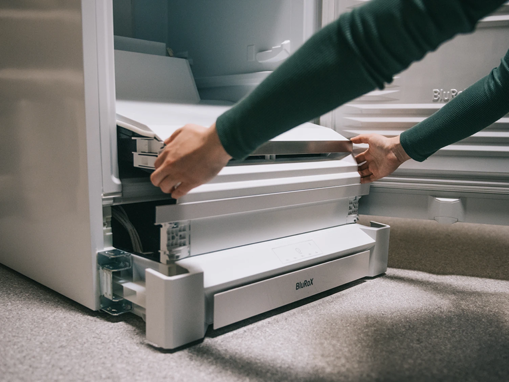

厨房品类创新 · 工业设计
利勃海尔 BluRoX：把冷冻柜的空间，向内多要一点
外形不变，保温层变薄；增容之外，可拆修也是产品价值。

Witt Denmark在9月9日的IFA报道中披露，BluRoX冷冻技术产品计划于10月供货。利勃海尔以真空与珍珠岩组成保温结构，品牌称同等外形下可增加约30%的储存空间。
FNXa 522i把制冷模块集中于底座，便于拆换。技术与认证早在2024年已公开，本次关注的是区域供货进展；10月时间来自Witt公告，不代表中国市场上市承诺。
Witt Denmark 官方发布 · 2026-09-09Liebherr 官方 BluRoX 技术页 · 产品技术背景，非9月9日首发Liebherr 2024年官方原始新闻稿 · 2024年IFA资料，认证颁发2024-09-029/9区域市场更新 · 技术非首发 · 10月供货为公告计划
编辑评分 88/100 · 配图自评 93/100